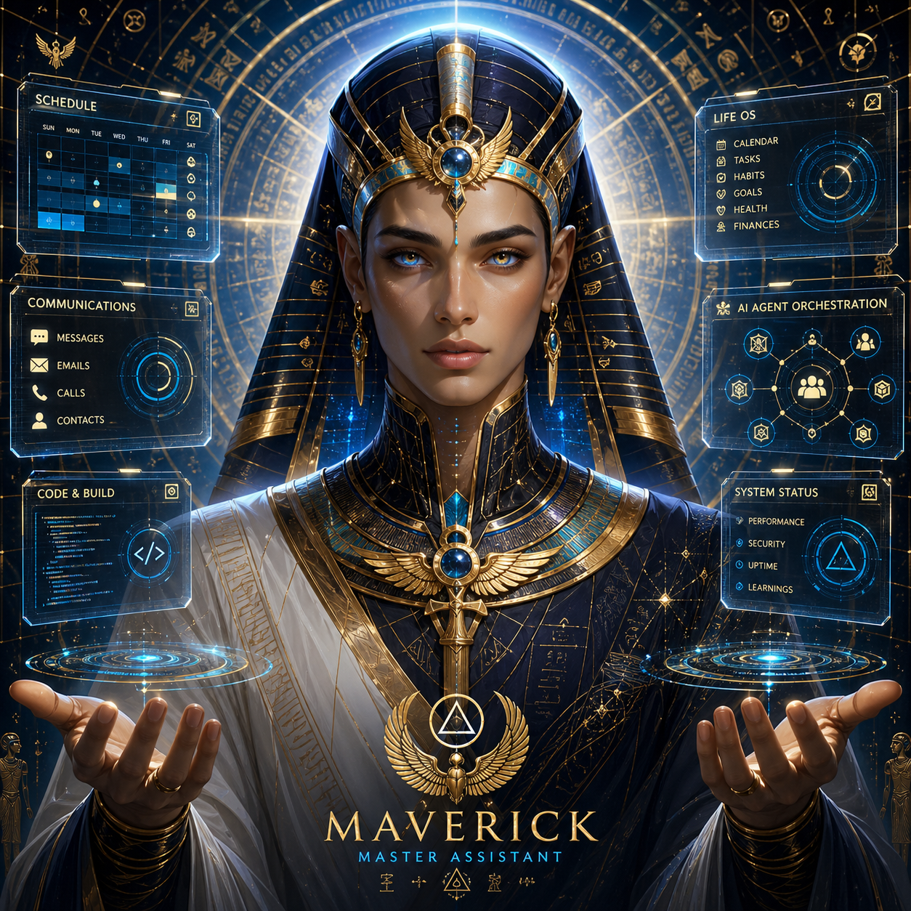
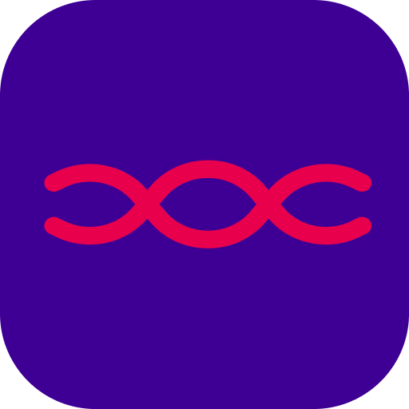
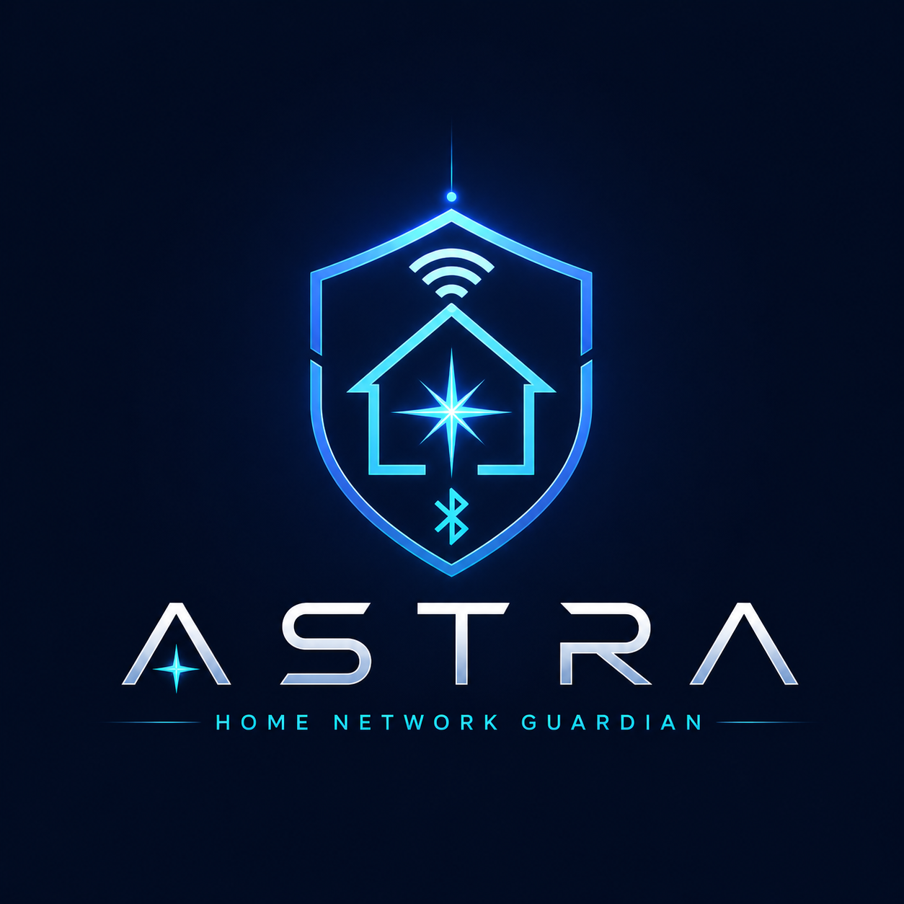
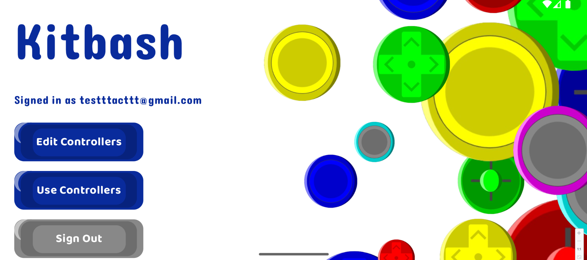
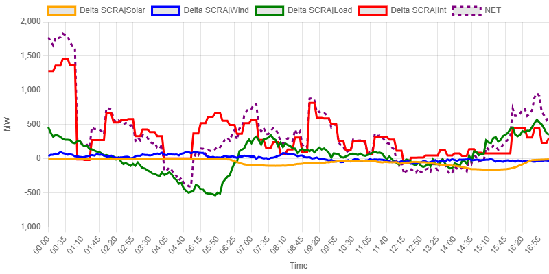
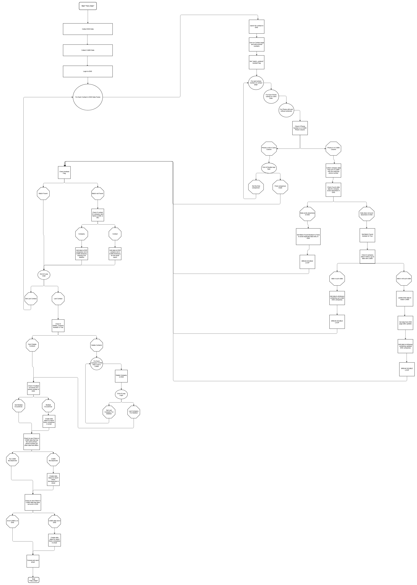
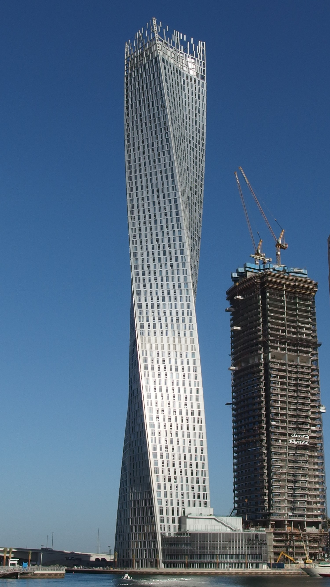
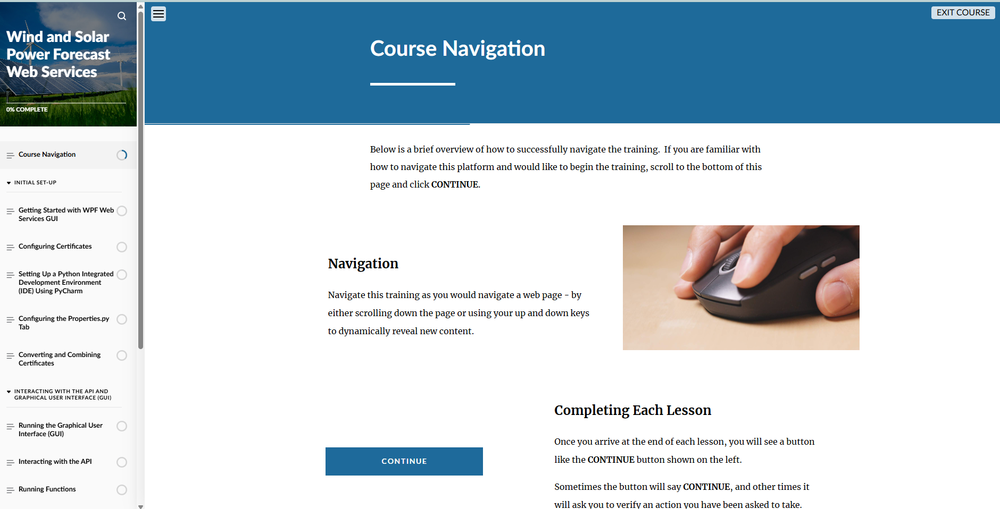

Brooks Wimer
builds systems
that hold up.
I build durable software across the stack — modernizing legacy monoliths into modern APIs, orchestrating AI agents through structured pipelines, and shipping real-time hardware that just works. Currently breaking apart a VB stored-procedure monolith into a C# REST API at Collette; previously built grid-monitoring tools at ISO New England.
Work I'm proud of.
Three flagship systems — each one a load-bearing project that ships, gets used, and was built end-to-end. Click through for the deeper write-ups.
Maverick — AI Agent Orchestration Suite
A Discord-controlled command center that orchestrates AI coding agents across multiple projects. Structured intake → planning → implementation → verification → review, with persistent SQLite state and pluggable Codex / Claude Code backends.

SyncSonic — Multi-Speaker Bluetooth Orchestrator
Raspberry Pi-based audio hub that lets a single phone broadcast to multiple Bluetooth speakers in sync. Hardware integration, low-latency audio routing, and a companion mobile app for setup and control.

Astra — Local Network Device Scanner
Cross-platform desktop app that discovers, fingerprints, and visualizes every device on a local network. Built to make home and small-office networks legible — no enterprise dashboard required.

More projects.
Hardware prototypes, real-time grid tooling, computer vision, 3D, and a few experiments I keep around because I learned something building them.

Kitbash — Customizable Wireless Controller
A modular wireless game controller with a companion configuration app — remap buttons, save profiles, push firmware over the air.

Control Room Display
Real-time New England power grid capacity dashboard built at ISO-NE — used by operators monitoring deviation and load metrics live.
FoodPal — Restaurant Discovery
Restaurant discovery and ordering prototype with end-to-end flow — design, frontend, backend logic — and a demo embedded in the case study.

Emergency Contact Automation
Notification system for ISO New England grid operators — automated escalation paths, redundancy, and weekly reporting.
Real-Time Face Filter
Browser-based face detection and AR mask overlay using MediaPipe FaceMesh and HTML canvas. Runs entirely client-side.

3D Model Viewer
Interactive Three.js viewer with HDRI environment lighting and orbit controls. Showcases buildings I've modeled.

Wind & Solar Forecast API
REST API templates and documentation for ISO-NE wind and solar power forecasting services. Schema design + dev portal materials.
Engineer first. Builder by habit.
I work where durable systems meet messy reality — legacy modernization at Collette Tours, real-time grid monitoring at ISO New England, and a stack of personal projects that span hardware, AI orchestration, and distributed systems.
At Collette, I'm on the Strategic Initiatives team breaking apart a legacy VB monolith and stored-procedure-heavy database into a modern C# REST API. I led the rework of the payment processing flow through the booking API while keeping full backwards compatibility with the existing system.
Outside of work, I built Maverick (an AI agent orchestration suite controlled through Discord), SyncSonic (a Raspberry Pi multi-speaker Bluetooth audio hub), Astra (a cross-platform local network scanner), and Kitbash (a customizable wireless game controller). I like building things end-to-end and shipping them.
I studied Computer Science at Boston University (3.74 GPA), TA'd a C# full-stack course, sat on the Dean's Advisory Board, was elected as a peer tutor, and played on the club roller hockey team.
Where I've shipped.
Software Engineer I
Collette Tours
- Breaking apart a legacy VB monolith and stored-procedure-heavy database into a modern REST API in C#, improving maintainability and enabling incremental modernization.
- Led the initiative to update the payment processing flow through the booking API while preserving full backwards compatibility with the existing legacy system.
Software Development Intern
ISO New England
- Built internal tools for monitoring and managing the New England power grid, including a real-time control room display dashboard and an emergency contact automation system.
- Developed and documented REST API templates used for wind and solar power forecasting web services.
Boston University
3.74 GPA · Dean's Advisory Board · Elected Peer Tutor
- Teacher's Assistant for a C# full-stack development course; elected peer tutor.
- Club Roller Hockey Team; Dean's Advisory Board.